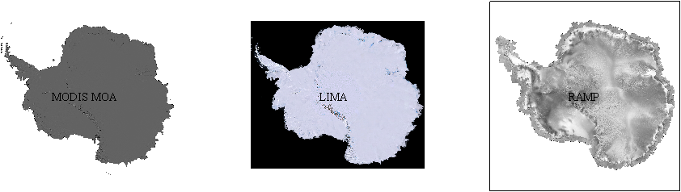
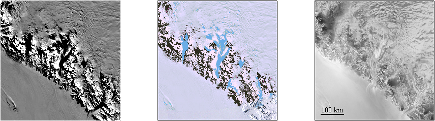
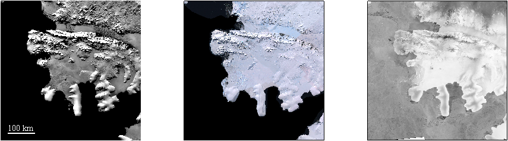
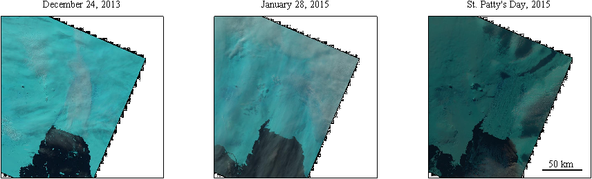
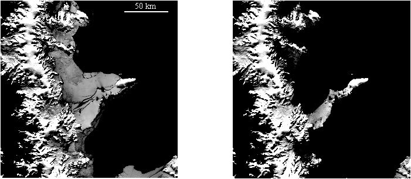
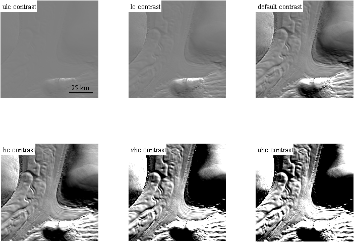

Satellite Image Comparison
This example file compares MODIS Mosaic of Antarctica, Landsat 8, Landsat Image Mosaic of Antarctica, and Radarsat Antarctic Mapping Project images of Antarctica. Images are plotted in Matlab using modismoa, lima, ramp, and landsat, which are plugins to Antarctic Mapping Tools for Matlab.
Contents
Full continent
MODIS MOA, LIMA, and RAMP are all image mosaics. Thus, they're easy to plot on the continent-wide scale:
figure('pos',[100 100 1100 420]) subplot(131) modismoa textm(-90,0,'MODIS MOA','horiz','center') subplot(132) lima textm(-90,0,'LIMA','horiz','center') subplot(133) ramp textm(-90,0,'RAMP','horiz','center')
Regions of interest
On a local or regional scale, sensor differences become apparent: MODIS offers the greatest radiometric resolution, Landsat gives color images, and RAMP can be used to identify flow. Note there are some minor syntax differences between plugins: modismoa and lima automatically zoom to features of interest, but ramp requires zooming with mapzoom before calling ramp:
figure('pos',[100 100 1100 420]) subplot(131) modismoa 'beardmore glacier' subplot(132) lima 'beardmore glacier' subplot(133) mapzoom 'beardmore glacier' ramp scalebar
Above, blue ice is evident in the Landsat image. Now compare images of floating ice:
figure('pos',[100 100 1100 420]) subplot(131) modismoa 'wilkins ice shelf' scalebar('color','w') subplot(132) lima 'wilkins ice shelf' subplot(133) mapzoom 'wilkins ice shelf' ramp
Temporal change
Currently, the only satellite image plugins for AMT with the ability to show temporal change are modismoa and landsat. The landsat function plots only low-resolution images, but offers the greatest temporal precision. If it does not find an image for the date you specify, it will automatically search for an image taken close to that date. landsat requires knowledge of the Landsat path and row for your region of interest. Here we compare a few landsat images specified by date:
figure('pos',[100 100 1100 420]) subplot(131) mapzoom('pine island glacier',200) landsat(233,113,'dec 24, 2013') title 'December 24, 2013' subplot(132) mapzoom('pine island glacier',200) landsat(233,113,'jan 28, 2015') title 'January 28, 2015' subplot(133) mapzoom('pine island glacier',200) landsat(233,113,'march 17, 2015') scalebar('location','se') title 'St. Patty''s Day, 2015'
modismoa allows you to specify the year 2004 or 2009:
figure('position',[100 100 900 400]) subplot(1,2,1) modismoa(-64.9,-60.2,200,'2004') scalebar('color','w','location','northeast') subplot(1,2,2) modismoa(-64.9,-60.2,200,'2009')
Contrast and feature detection
The best function for indentifying features such as flow stripes is often modismoa. The dynamic range range of MODIS allows detection of features large and small. Sometimes this means tinkering with contrast until the features are clear enough to see. Other times, such as when a MOA image is being used as a background plot intended only for geospatial context, you may wish to reduce contrast to bring focus to your data of interest. Here are a few of modismoa contrasts, ordered from ultra-low contrast ('ulc') to ultra-high contrast ('uhc'):
figure('position',[100 100 900 600]) subplot(2,3,1) modismoa('rutford ice stream',100,'contrast','ulc') scalebar('location','southeast','length',25) text(0,.95,' ulc contrast','units','normalized','backgroundcolor','w') subplot(2,3,2) modismoa('rutford ice stream',100,'contrast','lc') text(0,.95,' lc contrast','units','normalized','backgroundcolor','w') subplot(2,3,3) modismoa('rutford ice stream',100,'contrast','moa') text(0,.95,' default contrast','units','normalized','backgroundcolor','w') subplot(2,3,4) modismoa('rutford ice stream',100,'contrast','hc') text(0,.95,' hc contrast','units','normalized','backgroundcolor','w') subplot(2,3,5) modismoa('rutford ice stream',100,'contrast','vhc') text(0,.95,' vhc contrast','units','normalized','backgroundcolor','w') subplot(2,3,6) modismoa('rutford ice stream',100,'contrast','uhc') text(0,.95,' uhc contrast','units','normalized','backgroundcolor','w')
Mapping Toolbox and Polar Stereographic Coordinates
If you don't have Matlab's Mapping Toolbox, or if you wish to plot in polar stereographic cartesian coordinates, use lima or ramp with the 'xy' argument. Currently, modismoa and landsat do not support cartesian coordinates.
Colors and Colormaps
An important note for when images are plotted along with other datasets: modismoa and ramp set the current colormap to gray. If you wish to incorporate other datasets that use the colormap, such as semitransparent ice speed or temperature, you'll need to plot the grayscale modismoa or ramp image, freeze the color map with freezeColors, then plot your new dataset and set the new colormap.
On the contrary, landsat and lima images are plotted as RGB images and do not affect the current colormap.
Author Info
This tutorial was written by Chad Greene of the University of Texas at Austin's Institute for Geophysics (UTIG), July 2015.